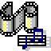
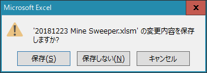

ヘルプ
正しい使い方が分からない人に使い方を教えるページです
分からない事一覧
1.ページに意味不明な文字が表示される
2.使用ソフトウェアのアイコンの意味が分からない
3.リンクのアイコンの意味が分からない
4.ゲームの遊び方や文章の閲覧方法が分からない
5.分からないことはありません
1.ページに意味不明な文字が表示される
 スクリプトの許可を取っていない
スクリプトの許可を取っていない
トップページにアクセスした時このポップアップを承認しないと、正しくホームページが表示されません
ちゃんと許可しましたか？
 1280×720ピクセル以上のパソコンで閲覧していない
1280×720ピクセル以上のパソコンで閲覧していない
これらのウェブサイトは1180×720ピクセル以上のパソコン
この条件を満たす環境を前提に作られています
フルスクリーンになっていますか？（ウィンドウの右上が画像な表示になっていますか？）
スマートフォンで閲覧している
これはホームページ制作者側が悪いです
いかんせん知識が古いのでスマホで正しく表示させることが難しいです
スマホを横向きにするとページがはみ出さなくなるかもしれません
2.使用ソフトウェアのアイコンの意味が分からない
トップページの段落の最初に表示されているアイコンが以下の記事のページへのリンクになっている
このアイコンはMicrosoft Wordで開ける事ができる事を意味するアイコンです
主にレジュメや文章を開くのに使います
 このアイコンはMicrosoft Excelで開ける事ができる事を意味するアイコンです
このアイコンはMicrosoft Excelで開ける事ができる事を意味するアイコンです
主にゲームや計算などに使います
 このアイコンはMicrosoft Power Pointで開ける事ができる事を意味するアイコンです
このアイコンはMicrosoft Power Pointで開ける事ができる事を意味するアイコンです
主にプレゼンテーションの内容を閲覧するのに使います

このアイコンは動画再生ソフトで開ける事ができる事を意味するアイコンです
mp4などの動画再生の際に使います
 このアイコンはメモ帳（TeraPad）で開ける事ができる事を意味するアイコンです
このアイコンはメモ帳（TeraPad）で開ける事ができる事を意味するアイコンです
主にテキストファイルを読むのに使います
このアイコンはPDFリーダーで開ける事ができる事を意味するアイコンです
主にパワーポイントの内容のコピーの閲覧ができます
 このアイコンはhtmlで開ける事ができる事を意味するアイコンです
このアイコンはhtmlで開ける事ができる事を意味するアイコンです
主にウェブデザインやソースコードの閲覧に使います
3.リンクのアイコンの意味が分からない
アイコンはそのコンテンツを何のソフトウェアで開けるかを示している

 このアイコンはトップページへのリンクです
このアイコンはトップページへのリンクです
どっちをクリックしても同じページに飛びますが、右の画像にはバナー的な意味も含まれています
 このアイコンはRecent Reportのリンクです
このアイコンはRecent Reportのリンクです
このアイコンは2019年度部活動紹介のリンクです
 このアイコンはコード⇔鍵盤 変換器のリンクです
このアイコンはコード⇔鍵盤 変換器のリンクです
 このアイコンは抵抗器「サーミスタ」を用いて温度計を作ってみたのリンクです
このアイコンは抵抗器「サーミスタ」を用いて温度計を作ってみたのリンクです
 このアイコンはマインスイーパーのリンクです
このアイコンはマインスイーパーのリンクです
 このアイコンは電卓（改）のリンクです
このアイコンは電卓（改）のリンクです
 このアイコンは電卓のリンクです
このアイコンは電卓のリンクです
 このアイコンは球面幾何学とはなにかのリンクです
このアイコンは球面幾何学とはなにかのリンクです
 このアイコンは３目並べのリンクです
このアイコンは３目並べのリンクです
このアイコンははじめに（トップページの前に表示されたページ）のリンクです
このアイコンは分からないことがあったら（このページ）のリンクです
4.ゲームの遊び方や文章の閲覧方法が分からない
 Word、Excel、Power Pointの場合
Word、Excel、Power Pointの場合
まず「～してみる」のリンクをクリックします
すると右のようなウィンドウが質問をしてきます
「開きますか？保存しますか？」
開くだけでいいです、保存するとHDDを圧迫するのでむしろやめてください

一通り遊んだあと、ファイルを終了しようとすると、ウィンドウが右のような質問をしてきます
「開いたときと内容変わってるけど、保存する？保存しない？」
保存しなくていいです、保存すると次回開いた人がその続きをする事になってしまいます
mp4ファイル、htmlファイル、テキストファイルの場合
クリックしてもウィンドウが質問してくる事はないので安心して下さい
見終わったらウィンドウを消しても問題ありません
5.分からないことはありません
そうですか ^_^ ;